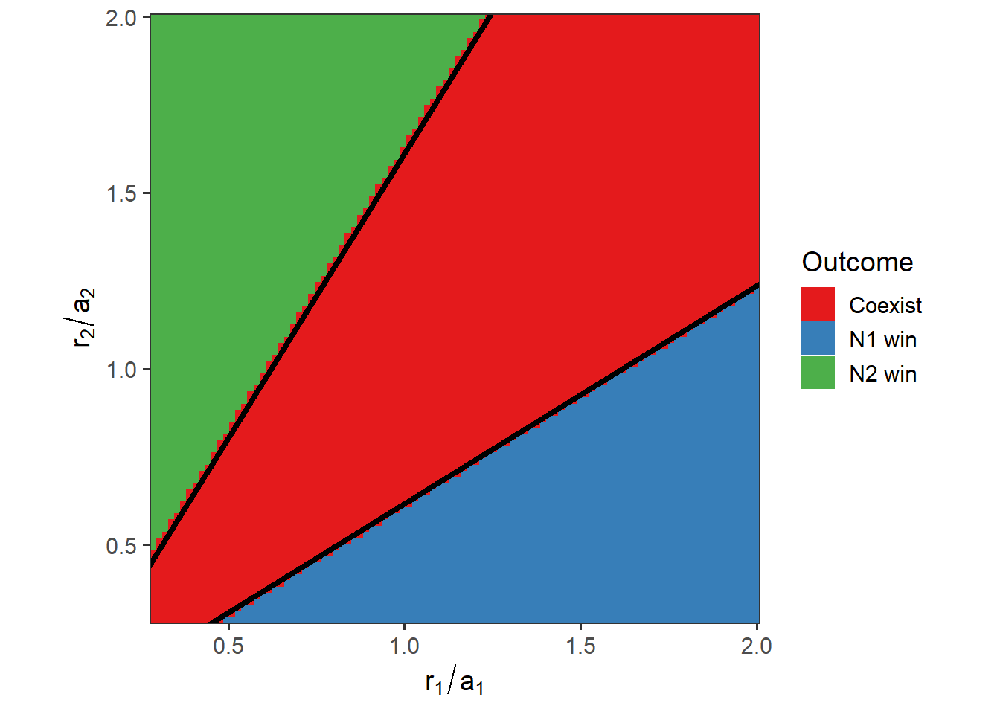

Week 12 - Rosenzweig-MacArthur predator-prey model and May’s complexity-stability relationship
Part 1: Rosenzweig–MacArthur predator–prey model
In this lab we are going to analyze the Rosenzweig–MacArthur predator–prey model:
\[\begin{align*} \frac {dN}{dt} &= rN(1-\frac{N}{K})-a\frac{N}{1+ahN}P\\ \frac {dP}{dt} &= ea\frac{N}{1+ahN}P-dP,\\ \end{align*}\] where \(r\) is the intrinsic growth rate of prey, \(K\) is the carrying capacity of prey, \(a\) is the rate of prey being consumed by predator, \(h\) is the handling time of predator, \(e\) is the assimilation rate of predation and \(d\) is the mortality rate of predator. The ZNGIs of \(N\) are \[ N = 0 \text{ and } P = \frac{r}{a}(1-\frac{N}{K})(1+ahN) \] and the ZNGIs of \(P\) are \[ P = 0 \text{ and } N = \frac{d}{a(e-dh)} \] The coexistence equilibrium is \(E_{np} = \left(N^* = \frac{d}{a(e-dh)}, P^* = \frac{r}{a}(1-\frac{N^*}{K})(1+ahN^*)\right)\).
Please simulate the model using the parameter set (\(N_0\) = 5, \(P_0\) = 2, \(r\) = 1.0, \(K\) = 5.0, \(a\) = 1.3, \(h\) = 0.9, \(e\) = 0.6, \(d\) = 0.5) and plot the population trajectories of predator and prey as well as show their population dynamics in the state-space diagram.
library(deSolve)
### Model specification
RM_predation_model <- function(times, state, parms) {
with(as.list(c(state, parms)), {
dN_dt = r*N*(1-(N/K))-(a*N/(1+a*h*N))*P
dP_dt = e*(a*N/(1+a*h*N))*P-d*P
return(list(c(dN_dt, dP_dt)))
})
}
### Model parameters
times <- seq(0, 200, by = 0.01)
state <- c(N = 5, P = 2)
parms <- c(r = 1.0, K = 5.0, a = 1.3, h = 0.9, e = 0.6, d = 0.5)
### Model application
pop_size <- ode(func = RM_predation_model, times = times, y = state, parms = parms)
### equilibrium
E_np <- with(as.list(parms),
c(N = d/(a*(e-d*h)),
P = r/a*(1-d/(a*(e-d*h))/K)*(1+a*h*d/(a*(e-d*h)))))
### Visualize the population dynamics
# population trajectories
plot(c(0, max(times)), c(0, max(pop_size[, c("N", "P")])), type = "n", xlab = "time", ylab = "population size")
lines(N ~ time, data = pop_size, col = "blue") # dynamics of N
lines(P ~ time, data = pop_size, col = "red") # dynamics of P
legend("topright", legend = c("N", "P"), col = c("blue", "red"), lty = 1)
# state-space diagram
max_P <- max(pop_size[ ,"P"])
max_N <- max(pop_size[ ,"N"])
plot(P ~ N, data = pop_size, type = "l", xlim = c(0, max_N*1.2), ylim = c(0, max_P*1.2))
points(E_np["P"] ~ E_np["N"], pch = 16) # equilibrium
with(as.list(parms), {
# ZNGIs of N
abline(v = 0, col = "blue")
curve(r/a*(1-x/K)*(1+a*h*x), from = -2, to = K+2, col = "blue", add = T)
# ZNGIs of P
abline(h = 0, col = "red")
abline(v = d/(a*(e-d*h)), col = "red")
})
legend("topright", legend = c("ZNGIs of N", "ZNGIs of P"), col = c("blue", "red"), lty = 1)
Remark: with() is a function that you can load the value in the object without subsetting.
Now we increase the carry capacity \(K\) to show the paradox of enrichment. Let’s consider \(K = 7\) with other parameters fixed.
### Model parameters
times <- seq(0, 200, by = 0.01)
state <- c(N = 5, P = 2)
parms <- c(r = 1.0, K = 7.0, a = 1.3, h = 0.9, e = 0.6, d = 0.5)
### Model application
pop_size <- ode(func = RM_predation_model, times = times, y = state, parms = parms)
### equilibrium
E_np <- with(as.list(parms),
c(N = d/(a*(e-d*h)),
P = r/a*(1-d/(a*(e-d*h))/K)*(1+a*h*d/(a*(e-d*h)))))The population size of \(N\) and \(P\) do not stay at the equilibrium but cycle.
### Visualize the population dynamics
# population trajectories
plot(c(0, max(times)), c(0, max(pop_size[, c("N", "P")])*1.2), type = "n", xlab = "time", ylab = "population size")
lines(N ~ time, data = pop_size, col = "blue") # dynamics of N
lines(P ~ time, data = pop_size, col = "red") # dynamics of P
legend("topright", legend = c("N", "P"), col = c("blue", "red"), lty = 1)# state-space diagram
max_P <- max(pop_size[ ,"P"])
max_N <- max(pop_size[ ,"N"])
plot(P ~ N, data = pop_size, type = "l", xlim = c(0, max_N*1.2), ylim = c(0, max_P*1.2))
points(E_np["P"] ~ E_np["N"], pch = 16) # equilibrium
with(as.list(parms), {
# ZNGIs of N
abline(v = 0, col = "blue")
curve(r/a*(1-x/K)*(1+a*h*x), from = -2, to = K+2, col = "blue", add = T)
# ZNGIs of P
abline(h = 0, col = "red")
abline(v = d/(a*(e-d*h)), col = "red")
})
legend("topright", legend = c("ZNGIs of N", "ZNGIs of P"), col = c("blue", "red"), lty = 1)
Do the long-term average of the population size equal to the equilibrium? Let’s calculate the long-term average of population size by function pracma::findpeaks(). It returns a matrix where each row represents one peak found. The first column gives the height, the second the position/index where the maximum is reached, the third and forth the indices of where the peak begins and ends — in the sense of where the pattern starts and ends.
library(pracma)
# find time points when local peaks occur
peaks <- findpeaks(pop_size[, "N"])[ ,2]
peaks ## [1] 2219 5694 8960 12225 15490 18755# get period as time between peaks
periods <- peaks[length(peaks)] - peaks[length(peaks) - 1]
# long-term average of N
avg_N <- mean(pop_size[(length(times) - periods + 1):length(times), "N"])
avg_N## [1] 3.642661# long-term average of P
avg_P <- mean(pop_size[(length(times) - periods + 1):length(times), "P"])
avg_P## [1] 1.4757## N P
## 2.564103 1.949845We show that the the long-term average of the population size of \(N\) and \(P\) are not identical to the equilibrium of \(N\) and \(P\). In fact, the long-term average of the resource \(N\) is larger than the original equilibrium due to the fact that the per capita growth rate of the \(P\) is a concave-downward function.
What will happen if you add a perturbation to the system (i.e., change the initial conditions)? Try out different values of \(N_0\) and \(P_0\) and visualize the differences in the state-space diagram.
Shiny app is credit to Gen-Chang Hsu
Part 2: May’s complexity-stability relationship
May’s insight was to skip the Jacobian calculation altogether and directly consider the Jacobian matrix as a large random matrix (\(\mathbf{M}\), with elements \(m_{ij}\)) resting at a feasible equilibrium, and then the eigenvalues of the Jacobian matrix could be derived based on random matrix theory.
Let’s try to recreate May’s random matrix. In particular, May considered the following algorithm to build the random Jacobian matrix for \(S\) species (thereby a \(S \times S\) matrix):Here, \(C\) represents the connectedness of the system (chance of species interacting with each other), \(\sigma^{2}\) can be considered as the realized interaction strengths, and \(d\) is the strength of self-limitation.
# code for building May's random matrix
BuildMay = function(S, C, d, sigma){
# fill the whole matrix
entry <- rnorm(S * S, mean = 0, sd = sigma)
M <- matrix(entry, nrow = S, ncol = S)
# remove connections
remove <- matrix(runif(S * S) <= C, nrow = S, ncol = S)
M <- M * remove
sum(M != 0) / (S*S) # should equal to C
# substrate diagonal elements by d
diag(M) <- diag(M) - d
return(M)
}
May <- BuildMay(S = 500, C = 0.5, d = 10, sigma = 1)
EVals <- eigen(May)$values
Re.EVals <- Re(EVals)
Im.EVals <- Im(EVals)
plot(Re.EVals, Im.EVals, xlab = "Real part", ylab = "Imaginary part")
abline(v = 0, col = "red", lty = 2)
Extra reading: Elliptic raw
In May’s random matrix, the entries \(m_{ij}\), which represents the effect of species \(j\) on species \(i\)’s growth rate, are independently generated. However, in ecological networks, we usually model pairwise interaction such as consumer-resource, mutualism, and competition, in which cases, \(m_{ij}\) is not independent of \(m_{ji}\). For consumer-resources interactions, \(m_{ij}\) and \(m_{ji}\) are negatively correlated. For mutualism or competition interaction, \(m_{ij}\) and \(m_{ji}\) are positively correlated. Under the assumption that the pairwise interactions are correlated, we may show that the eigenvalues of the randomly generated Jacobian do not follow uniform distribution in a circle, but in an ellipse.
We build a function BuildElliptic with argument \(S\) is the number of species (i.e. the dimension of the Jacobian), \(C\) is the connectance, \(d\) is the strength of self-limitation, \(\sigma\) is the variance (i.e. the realized interaction strength) and \(\rho\) is the correlation of the pairwise interaction.
library(ggplot2)
#### The function to build Elliptic law
BuildElliptic <- function(S, C, d, sigma, rho){
# sample coefficients in pairs
pairs <- MASS::mvrnorm(n = S * (S-1) / 2,
mu = c(0, 0),
Sigma = sigma^2 * matrix(c(1, rho, rho, 1), 2, 2))
# build a completely filled matrix
M <- matrix(0, S, S)
M[upper.tri(M)] <- pairs[,1]
M <- t(M)
M[upper.tri(M)] <- pairs[,2]
# determine which connections to retain (in pairs)
Connections <- (matrix(runif(S * S), S, S) <= C) * 1
Connections[lower.tri(Connections)] <- 0
diag(Connections) <- 0
Connections <- Connections + t(Connections)
M <- M * Connections
# set diagonals
diag(M) <- diag(M) - d
return(M)
}# consumer-resources interactions
M_CR <- BuildElliptic(S = 500, C = 0.3, d = 10, sigma = 1, rho = -0.5)
EVals_CR <- eigen(M_CR)$values
Re.EVals_CR <- Re(EVals_CR)
Im.EVals_CR <- Im(EVals_CR)
# mutualism or competition
M_MC <- BuildElliptic(S = 500, C = 0.3, d = 10, sigma = 1, rho = 0.5)
EVals_MC <- eigen(M_MC)$values
Re.EVals_MC <- Re(EVals_MC)
Im.EVals_MC <- Im(EVals_MC)
# combine data
Re.EVals <- c(Re.EVals_CR, Re.EVals_MC)
Im.EVals <- c(Im.EVals_CR, Im.EVals_MC)
# visualization
plot(Re.EVals, Im.EVals, xlab = "Real part", ylab = "Imaginary part", type = "n")
points(Re.EVals_CR, Im.EVals_CR, col = "green")
points(Re.EVals_MC, Im.EVals_MC, col = "blue")
abline(v = 0, col = "red", lty = 2)
legend("topleft", legend = c("Resource-consumer", "Mutualism or Competition"), col = c("green", "blue"), pch = 1)